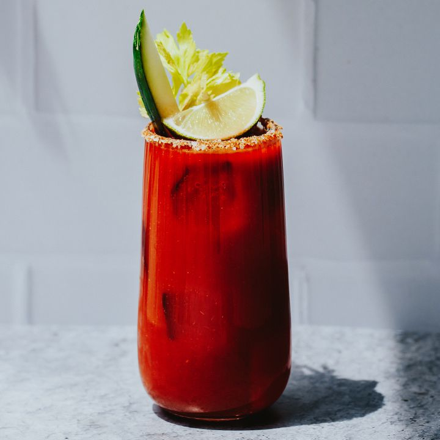

Hospitality worker Walter Chell invented the Caesar in Clagary, Alberta in 1969. There have been many other similar drinks created before this, dating back to the early 20th century. The Calgary Inn asked Chell to craft a cocktail to celebrate the opening of its new Italian resturant. Chell spent three months formulating the drink, taking inspiration from Spagetti Alle Vongole, a pasta dish made with clams. Chell mashed clams to produce "clam nectar" and mixed this with tomato juice and spices. In 1994 Chell told the Toronto Star his secret ingredient was a dash of oregano and also said he did not include hot pepper sauce.
On a flat, small plate pour some celery salt. With your chosen glass run a lime wedge around the edge. Dip the glass into the celery salt fullt coating the rim of the glass. Add ice to the glass and pour in the vodka, worcestershire sauce and hot pepper sauce. Top up with tomato and clam juice and garnish with celery stick.